Group Delay Measurement
Hideo Okawara
Paper ID 115875
Introduction
The group delay characteristic (group delay versus frequency curve) can be used to evaluate the phase-frequency response of devices. The most typical device is filters. This note describes how to measure the group delay characteristic, including a measurement technique and easy calculation method on the measurement results.
Group delay
Group delay is one of the key parameters in digital communication systems, where information is conveyed on the amplitude, the phase and the frequency of the signals. If the system does not have good linearity, the signal waveform is distorted and the three elements of the signal could be spoiled, resulting data errors. The group delay is the gradient of the phase characteristics so that the group delay response influences the phase of each frequency component of the signal. It should be flat within the signal frequency band; otherwise the signal waveform would be distorted.
Group delay is defined as
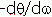
, which is the derivative of the radian phase (q) with respect to the radian frequency (ω). The group delay at a certain angular frequency w1 is the tangential slope at w1 on the phase versus frequency curve. can be approximated as -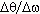
so that a pair of close frequencies can be used to estimate the slope of phase at the frequency point.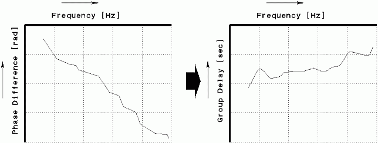
Firgure 1: Phase difference and group delay
Measurement configuration
Filters are the most typical devices under test (DUT) in the group delay test. Figure 2 shows a typical filter test configuration. An arbitrary waveform generator (AWG) generates a test signal, and two digitizers measure the input and output signals. If you have a single digitizer available, you should switch it between the input and the output.
When you would like to measure a group delay at 1000 Hz, you should create your test signal including two close frequencies, such as f1=1000 Hz and f2=1010 Hz.
The test signal is generated by the AWG. Digitizer A records the input signal, and Digitizer B records the output signal. Then you perform the fast Fourier transform (FFT) on the data captured by those digitizers.
The FFT frequency resolution (Fresln) is the reciprocal of the unit test period (UTP) which is the number of data (N) divided by the sampling frequency (Fs). In other words, Fresln=Fs/N. The difference Δf = f2 - f1 should match the frequency resolution of FFT or its multiple. So if f1=1000 Hz and f2=1010 Hz, the difference is 10Hz so that UTP should be 100 ms or its multiple.
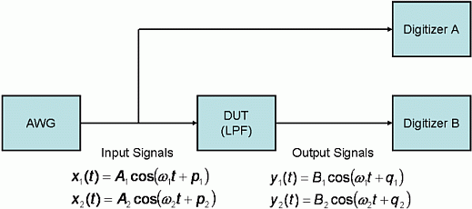
Figure 2: Test diagram and input/output signals
Basic calculation
When testing a filter frequency response in general, only amplitude is required so that the phase is ignored usually. Therefore the API DSP_SPECTRUM( ) is often employed, delivering the amplitude only. But for the group delay test, the phase information is required so that DSP_FFT( ) must be employed instead.
Once FFT derives each one of the phase components at each frequency point, the group delay is calculated as follows:
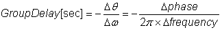
Equation (1)For example, for the test signals shown in Figure 2, the group delay is described as follows:
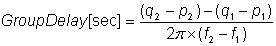
Equation (2)where (q1-p1) and (q2-p2) are phase rotations through the DUT at the frequencies f1 and f2 respectively.
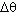
means the phase difference between the phase rotations at f1 and f2.The phase lag has a negative slope so that is negative. If the term "delay" is defined as a positive value, you should calculate -.Multi-tone measurement
When measuring the group delay characteristic of a filter, you can use the multi-tone method, which is very popular and efficient in frequency response evaluation. Figure 3 shows the input and output signal spectra. There are 50 tones from 195.190429688kHz to 9.7595214844MHz with equal spacing of approximately 195.19kHz.
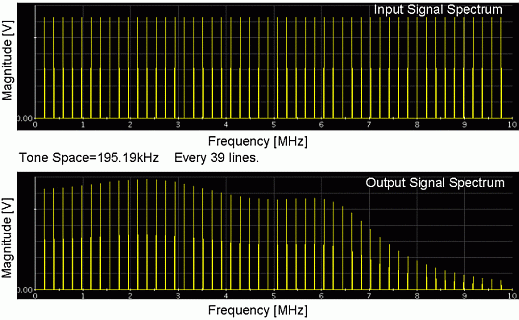
Figure 3: Multi-tone test signal spectra (input and output)
Example program
The source code listed below describes the group delay calculation sequence.
1: INT i,Ndgt,Nsp,Ntones;
2: DOUBLE dFdgt,dFresln,dDeltaFrequency;
3: ARRAY_I Ncycles;
4: ARRAY_D dVdgt1,dVdgt2,dFrequency,dGain,dPhase,dDelay,dTemp;
5: ARRAY_COMPLEX CSp1,CSp2,CInput,COutput,CResponse,CResponse1,CResponse2;
6:
7: ...
8:
9: dVdgt1=DGT("DGT1").getWaveform(); // Read out the input side digitizer
10: dVdgt2=DGT("DGT2").getWaveform(); // Read out the output side digitizer
11: dFdgt=1.0/DGT("DGT1").getConvClock(); // Sampling frequency (41Msps here)
12:
13: Ndgt=dVdgt1.size(); // # of captured data (8192 points here)
14: dFresln=dFdgt/Ndgt; // Freqeuncy resolution (~5.005kHz here)
15:
16: Ntones=50; // # of multi-tone (50 tones here)
17: Ncycles.resize(Ntones); // Multi-tone bin locations
18: dFrequency.resize(Ntones); // Multi-tone frequencies
19: for (i=0;i<Ntones;i++) {
20: Ncycles[i]=39*(i+1); // Each tone is allocated every 39 bins
21: dFrequency[i]=Ncycles[i]*dFresln; // Each tone frequency (~195.19kHz here)
22: }
23:
24: DSP_FFT(dVdgt1,CSp1,RECT); // CSp1/2 contain 4096 spectral lines.
25: DSP_FFT(dVdgt2,CSp2,RECT); // 50 tones out of 4096 is valid.
26:
27: CInput.resize(Ntones); // Input multi-tone (50 valid tones)
28: COutput.resize(Ntones); // Output multi-tone (50 valid tones)
29: for (i=0;i<Ntones;i++) { // Select 50 lines every 39 bins
30: CInput[i]=CSp1[Ncycles[i]];
31: COutput[i]=CSp2[Ncycles[i]];
32: }
33:
34: DSP_DIV_VEC(COutput,CInput,CResponse); // This operation is one of the keys.
35:
36: ////////////////////////////////////////
37: // The lines 38..52 derive the gain/phase, and need not for group delay.
38: DSP_RECT_POL(CResponse,dGain,dPhase); // dPhase[] is wrapped within +/-π
39: for (i=0;i<Ntones;i++) { // dGain[]: [dB] for display
40: if (dGain[i]>0.0) dGain[i]=20.0*log10(dGain[i]);
41: else dGain[i]= -100.0;
42: }
43: PUT_DEBUG("","dGain[dB]",dGain); // Display
44:
45: k=0;
46: for (i=0;i<(Ntones-1);i++) { // Phase un-wrapping for display
47: dPhase[i]=dPhase[i]+k*2.0*M_PI; // Phase discrepancy repairment
48: if ((dPhase[i+1]+k*2.0*M_PI-dPhase[i])<(-1.5*M_PI)) k=k+1;
49: else if ((dPhase[i+1]+k*2.0*M_PI-dPhase[i])>( 1.5*M_PI)) k=k+1;
50: }
51: dPhase[Ntones-1]=dPhase[Ntones-1]+k*2.0*M_PI;
52: PUT_DEBUG("","dPhase[rad]",dPhase); // Display
53: /////////////////////////////////////////
54:
55: CResponse1.resize(Ntones-1); // Preparation for differential calc.
56: for (i=0;i<(Ntones-1);i++) CResponse1[i]=CRespons[i+1];
57: CResponse.resize(Ntones-1); // # of components is (Ntones-1).
58: DSP_DIV_VEC(CResponse,CResponse1,CResponse2); // This is another key.
59: DSP_RECT_POL(CResponse2,dTemp,dDelay); // dTemp[] is formal and perfunctory.
60: dDeltaFrequency=39*dFresln; // Frequency difference between tones
61: DSP_MUL_SCL(1.0/(2.0*M_PI*dDeltaFrequency),dDelay,dDelay); // Group Delay [sec]
62: PUT_DEBUG("","dDelay[sec]",dDelay); // DisplayEquation (2) contains two kinds of phase subtraction. One is the phase rotation calculation from the input to the output at each tone. The other is the phase difference between the two adjacent tones. In general, the DSP API "DSP_RECT_POL( )" is used to convert complex number or vector arrays to polar expression for easy comprehension of spectrum. It looks easy to employ this API for phase data manipulation. However, as you can see the source code lines from 38 to 52, the polar phase notation with the unit of radian or degree wraps the angle within +/-πso that you need to un-wrap the folded phase by cumbersome manipulation. In this example +/-1.5πis used to decision of discrepancy in lines 48 and 49. This criterion is experimentally decided in the debugging process. Consequently the phase difference manipulation should be processed with the complex number notation as the lines 34 and 58. "DSP_DIV_VEC( )" is provided for dividing vectors, and elegant for phase difference calculation. The rectangular to polar conversion should be performed at the end of the entire operation for deriving the friendly parametric results and for graphical display.
In the multi-tone method, adding more tones does not have much impact on the measurement throughput. However, if more tones are used, the energy of each tone is less distributed. In other words, putting in too many tones makes the accuracy worse. Do not go overboard.
Sample test result
The following graphs show sample test results based on the spectrum in Figure 3.
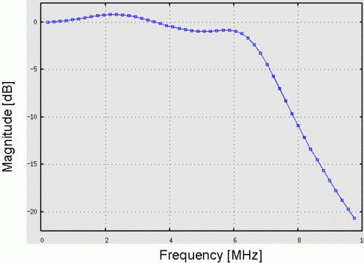
Figure 4: Gain response
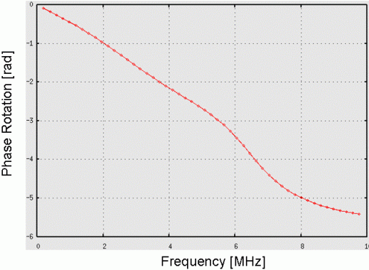
Figure 5: Phase response
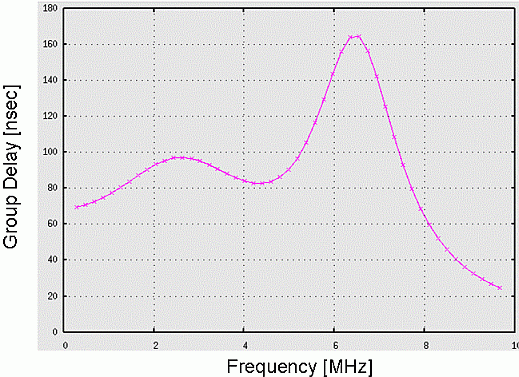
Figure 6: Group delay response